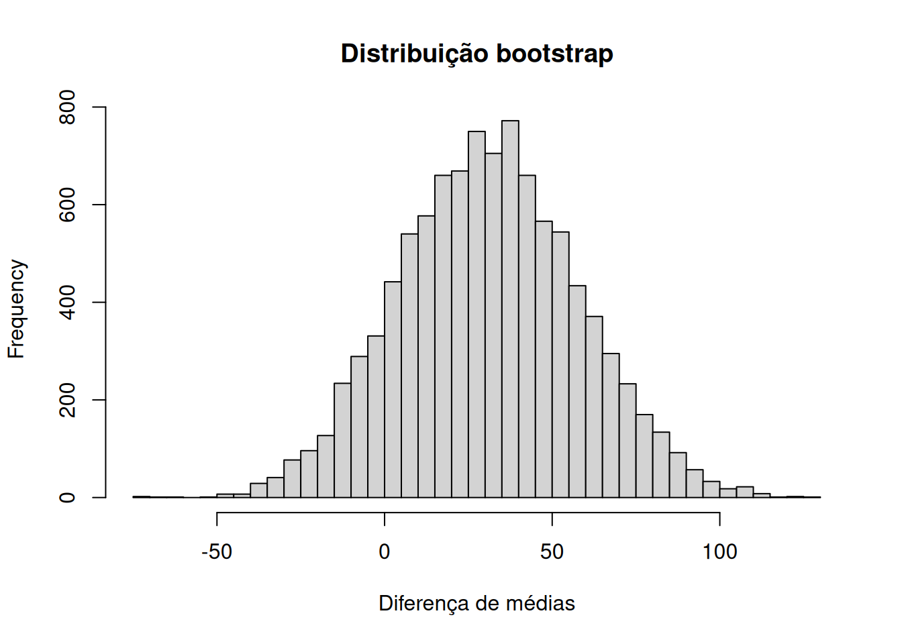

bootstrap_se <- function(x, stat = mean, B = 9999, seed = 1234) {
set.seed(seed)
n <- length(x)
theta_star <- replicate(
B,
stat(sample(x, size = n, replace = TRUE))
)
list(
estimate = stat(x),
bootstrap_mean = mean(theta_star),
bias = mean(theta_star) - stat(x),
se = sd(theta_star),
replicates = theta_star
)
}5 Bootstrap e Jackknife
O bootstrap e o jackknife são métodos de reamostragem usados para estudar a variabilidade de estimadores quando a distribuição amostral de interesse é desconhecida, difícil de obter analiticamente ou pouco conveniente para cálculo direto. Em ambos os casos, a ideia central é reutilizar a informação contida na amostra observada para aproximar propriedades que, conceitualmente, seriam definidas por repetição do processo amostral.
No bootstrap não paramétrico, a distribuição populacional desconhecida é substituída pela distribuição empírica dos dados; novas amostras são então geradas com reposição e a estatística de interesse é recalculada em cada reamostra. No jackknife, por sua vez, constrói-se sistematicamente uma coleção de amostras deixando uma observação de fora a cada vez. Esses procedimentos permitem estimar erros padrão e viés e, no caso do bootstrap, construir diferentes tipos de intervalos de confiança e procedimentos inferenciais.
Base bibliográfica: a organização conceitual deste capítulo segue principalmente Chihara; Hesterberg (2022) [Capítulo 5, pp. 103–141; Seção 7.5, pp. 216–224; Seções 13.1–13.2, pp. 444–452], Voss (2014, seç. 5.2, pp. 192–208), Chernick (2008) [Capítulos 1, 3, 6 e 9] e Chernick; LaBudde (2011, cap. 1–3, 6 e 8). A implementação em R e a apresentação de aplicações modernas são complementadas por Thulin (2025) [Seção 7.4, pp. 266–273], Zieffler; Harring; Long (2011, especialmente a discussão de intervalos bootstrap ajustados) e Ramachandran; Tsokos (2021, seç. 13.2–13.3, pp. 532–540).
5.1 Objetivos de aprendizagem
Ao final deste capítulo, espera-se que o leitor seja capaz de:
- distinguir distribuição amostral, distribuição bootstrap e distribuição de Monte Carlo;
- formular o princípio plug-in que fundamenta o bootstrap não paramétrico;
- implementar o algoritmo bootstrap para estimar viés e erro padrão;
- explicar a diferença entre bootstrap não paramétrico e paramétrico;
- escolher corretamente a unidade de reamostragem em amostras simples, grupos independentes, dados pareados e dados dependentes;
- reconhecer que aumentar o número de réplicas \(B\) reduz o erro de Monte Carlo, mas não corrige uma amostra original pouco informativa;
- construir e comparar intervalos normal, básico, percentil, bootstrap-\(t\) e \(BC_a\);
- distinguir testes bootstrap de testes de permutação;
- reconhecer situações em que o bootstrap ordinário pode falhar;
- implementar o jackknife para estimar viés e variância;
- interpretar pseudovalores jackknife e sua relação com a constante de aceleração do intervalo \(BC_a\);
- desenvolver implementações reprodutíveis em R e diagnosticar instabilidade computacional.
5.2 Distribuição amostral e erro padrão
Considere uma amostra aleatória
\[X_1,\ldots,X_n \stackrel{\text{iid}}{\sim} F\]
e uma estatística
\[\hat{\Theta}=s(X_1,\ldots,X_n)\]
usada para estimar um parâmetro
\[\Theta=t(F).\]
A variabilidade de \(\hat{\Theta}\) é determinada pela repetição conceitual do processo amostral: novas amostras de tamanho \(n\) seriam extraídas de \(F\) e a estatística seria recalculada em cada amostra. A distribuição probabilística resultante é a distribuição amostral de \(\hat{\Theta}\).
ImportanteDefinição
A distribuição amostral de uma estatística é a distribuição de probabilidade dessa estatística sob repetidas amostras geradas pelo mecanismo probabilístico que define a população ou o desenho amostral.
O erro padrão de um estimador é o desvio padrão de sua distribuição amostral:
\[ep_F(\hat{\Theta}) = \sqrt{ \operatorname{Var}_F(\hat{\Theta}) }.\]
Base bibliográfica: Chihara; Hesterberg (2022) [Seção 4.1, pp. 77–82] e Voss (2014) [Seção 3.2.2, pp. 76–80; Seção 5.2.2, pp. 201–203].
DicaInterpretação
O erro padrão mede variabilidade amostral, não o erro observado em relação ao parâmetro, que é desconhecido. Um erro padrão pequeno indica que, sob repetição do mesmo procedimento amostral, o estimador tende a variar pouco.
Quando a distribuição amostral é aproximadamente normal, as regras de aproximadamente um e dois erros padrão em torno do centro são úteis. Fora desse contexto, porém, não se deve interpretar automaticamente “um erro padrão” como aproximadamente 68% de probabilidade, nem “dois erros padrão” como aproximadamente 95%.
Base bibliográfica: Chihara; Hesterberg (2022, seç. 4.1–4.3, pp. 77–93).
Para a média amostral, sob independência e variância populacional finita,
\[ep_F(\bar X) = \frac{\sigma}{\sqrt{n}},\]
e a estimativa usual é
\[\widehat{ep}(\bar X) = \frac{s}{\sqrt{n}},\]
em que
\[s^2 = \frac{1}{n-1} \sum_{i=1}^n(X_i-\bar X)^2.\]
A dificuldade surge quando \(s(\cdot)\) é uma estatística complexa — uma mediana, razão, quantil, medida de associação, parâmetro estimado por algoritmo iterativo ou outra função não linear — para a qual uma expressão analítica simples para o erro padrão pode não estar disponível. É nesse contexto que métodos de reamostragem se tornam especialmente úteis.
5.3 O princípio bootstrap
5.3.1 A distribuição empírica como estimativa da população
Se a distribuição \(F\) é desconhecida, o bootstrap não paramétrico a substitui pela distribuição empírica
\[\widehat F_n(x) = \frac{1}{n} \sum_{i=1}^n I(X_i\leq x).\]
Condicionalmente aos valores observados \(x_1,\ldots,x_n\), \(\widehat F_n\) atribui massa \(1/n\) a cada posição amostral.
ImportanteDefinição: amostra bootstrap
Uma amostra bootstrap não paramétrica é uma amostra
\[X_1^*,\ldots,X_n^* \stackrel{\text{iid}}{\sim} \widehat F_n.\]
Na prática, isso equivale a sortear \(n\) índices com reposição do conjunto \(\{1,\ldots,n\}\) e selecionar os valores correspondentes da amostra original.
A estatística
\[\hat{\Theta}^* = s(X_1^*,\ldots,X_n^*)\]
é chamada de réplica bootstrap.
Base bibliográfica: Chihara; Hesterberg (2022) [Seções 5.1–5.2, pp. 103–114], Voss (2014, seç. 5.2.1, pp. 192–197) e Thulin (2025, seç. 7.4.1, pp. 266–268).
A ideia pode ser expressa como uma substituição plug-in:
\[F \quad\longrightarrow\quad \widehat F_n,\]
de modo que uma quantidade definida sob a população,
\[\mathcal T(F),\]
é aproximada por
\[\mathcal T(\widehat F_n).\]
No caso do erro padrão,
\[ep_F(\hat{\Theta}) \quad\longrightarrow\quad ep_{\widehat F_n}(\hat{\Theta}^*).\]
Base bibliográfica: o princípio plug-in e a interpretação do bootstrap como substituição da distribuição desconhecida pela distribuição empírica são desenvolvidos em Chihara; Hesterberg (2022) [Seção 5.2, pp. 109–114] e Voss (2014, seç. 5.2.1, pp. 192–201).
5.3.2 Bootstrap e Monte Carlo não são a mesma coisa
O bootstrap é implementado computacionalmente por simulação de Monte Carlo, mas os dois conceitos não devem ser confundidos.
DicaInterpretação
Em um estudo de Monte Carlo, o pesquisador especifica um mecanismo de geração de dados, por exemplo
\[X_i\sim N(\mu,\sigma^2),\]
com parâmetros conhecidos no experimento computacional. Repetindo o experimento, pode-se avaliar viés, erro quadrático médio, cobertura ou potência de um procedimento.
No bootstrap não paramétrico, o mecanismo gerador original \(F\) permanece desconhecido. Condicionalmente à amostra observada, usa-se \(\widehat F_n\) como aproximação de \(F\) e simula-se a partir dessa distribuição empírica.
Portanto, há dois níveis distintos:
\[\text{erro devido à amostra original} \qquad\text{e}\qquad \text{erro de Monte Carlo devido ao número finito de réplicas }B.\]
Aumentar \(B\) reduz apenas o segundo componente.
Base bibliográfica: Voss (2014) [Seções 3.2 e 5.2] e Chihara; Hesterberg (2022, seç. 5.7–5.9, pp. 130–137).
5.4 Algoritmo bootstrap não paramétrico
Suponha que a amostra observada seja
\[\mathbf{x}=(x_1,\ldots,x_n)\]
e que a estatística de interesse seja
\[\hat\theta=s(\mathbf{x}).\]
5.4.1 Estimativa bootstrap do viés
Defina
\[\overline{\theta^*} = \frac{1}{B} \sum_{b=1}^B \hat\theta^{*(b)}.\]
A estimativa bootstrap de viés é
\[\widehat{\operatorname{bias}}_{\text{boot}} = \overline{\theta^*} - \hat\theta.\]
DicaInterpretação
O bootstrap procura reproduzir, sob \(\widehat F_n\), a relação entre o estimador e o parâmetro que existiria sob \(F\). Assim, a diferença entre a média das réplicas e a estimativa original é usada como aproximação do viés de \(\hat\Theta\).
Base bibliográfica: Voss (2014) [Algoritmo 5.15, pp. 199–201] e Chihara; Hesterberg (2022, seç. 5.6, pp. 126–129).
Uma estimativa corrigida por viés pode ser escrita como
\[\hat\theta_{\text{corr}} = \hat\theta - \widehat{\operatorname{bias}}_{\text{boot}} = 2\hat\theta-\overline{\theta^*}.\]
Essa correção não deve ser aplicada mecanicamente: reduzir viés pode aumentar variância, e o desempenho deve ser avaliado no contexto da estatística e do objetivo inferencial.
5.4.2 Estimativa bootstrap do erro padrão
A estimativa Monte Carlo do erro padrão bootstrap é o desvio padrão das réplicas:
\[\widehat{ep}_{\text{boot}} = \sqrt{ \frac{1}{B-1} \sum_{b=1}^B \left( \hat\theta^{*(b)} - \overline{\theta^*} \right)^2 }.\]
Base bibliográfica: Voss (2014) [Algoritmo 5.18, pp. 201–203] e Ramachandran; Tsokos (2021, seç. 13.3, pp. 537–538).
5.4.2.1 Implementação básica em R
5.5 Quantas réplicas bootstrap usar?
O número de réplicas, denotado por \(B\), controla a precisão da aproximação de Monte Carlo da distribuição bootstrap. Ele não controla a qualidade da amostra original como representação da população.
Chihara; Hesterberg (2022) [Seção 5.9, pp. 136–137] registra recomendações históricas menores, mas argumenta que, com o custo computacional atual, convém usar mais reamostras: para prática rotineira, recomenda pelo menos \(10\,000\) réplicas, e observa que um intervalo percentil bilateral de 95% pode exigir cerca de \(15\,000\) réplicas para controlar melhor a variabilidade de Monte Carlo nas caudas. Thulin (2025, seç. 7.4, p. 266) propõe, como regra prática, \(B=9\,999\) ou mais quando o custo computacional permitir. Voss (2014, pp. 205–206) também mostra que mesmo alguns milhares de réplicas podem deixar variação perceptível nos limites de intervalos.
ImportantePrincípio prático
Não existe um valor universal de \(B\) adequado para todos os objetivos.
- Para exploração didática, \(B=1\,000\) pode ser útil para visualizar o mecanismo, mas não deve ser tratado como padrão universal para resultados finais.
- Para uso rotineiro, \(B\ge 10\,000\) é uma referência mais defensável nas fontes adotadas neste capítulo.
- Para quantis de cauda usados em intervalos de confiança, pode ser necessário aumentar ainda mais \(B\).
- Em qualquer caso, o critério mais informativo é verificar a estabilidade do resultado quando \(B\) aumenta.
Uma estratégia simples é comparar, por exemplo,
\[B=1\,000,\quad 5\,000,\quad 10\,000,\quad 20\,000\]
e examinar se erro padrão, viés e limites do intervalo permanecem praticamente inalterados.
B_grid <- c(1000, 5000, 10000, 20000)
se_grid <- sapply(B_grid, function(B) {
bootstrap_se(x, stat = mean, B = B, seed = 1234)$se
})
data.frame(B = B_grid, bootstrap_se = se_grid)
CuidadoErro de Monte Carlo não é erro estatístico
Mesmo com \(B\to\infty\), a distribuição bootstrap continua condicionada à amostra original. Se \(n\) é pequeno, se a amostra não representa adequadamente a população ou se o esquema de reamostragem não reproduz a estrutura dos dados, aumentar \(B\) apenas fornece uma aproximação mais precisa de um alvo bootstrap inadequado.
Base bibliográfica: Chihara; Hesterberg (2022) [Seções 5.8–5.9, pp. 131–137], Voss (2014, pp. 205–206) e Chernick (2008, cap. 9, pp. 172–185).
5.6 Exemplo do manuscrito: tempos de sobrevivência de ratos
Considere os dados do manuscrito original:
tratamento <- c(94, 197, 16, 38, 99, 141, 23)
controle <- c(52, 104, 146, 10, 51, 30, 40, 27, 46)
mean(tratamento)[1] 86.85714mean(controle)[1] 56.22222sd(tratamento) / sqrt(length(tratamento))[1] 25.23549sd(controle) / sqrt(length(controle))[1] 14.1586As médias observadas são aproximadamente
\[\bar x = 86{,}86 \qquad\text{e}\qquad \bar y = 56{,}22,\]
de modo que
\[\bar x-\bar y = 30{,}63.\]
Sob independência entre os grupos, a estimativa usual do erro padrão da diferença de médias é
\[\widehat{ep}(\bar X-\bar Y) = \sqrt{ \frac{s_X^2}{n_X} + \frac{s_Y^2}{n_Y} } \approx 28{,}94.\]
Portanto,
\[\frac{30{,}63}{28{,}94} \approx 1{,}06.\]
DicaInterpretação corrigida
A diferença observada está a pouco mais de um erro padrão estimado de zero. Isso não autoriza concluir que o tratamento não aumenta a sobrevivência. A formulação apropriada é mais modesta: com base apenas nesse resumo aproximado, os dados não fornecem evidência forte de um aumento da média.
Ausência de evidência estatística contra uma hipótese nula não é equivalente a evidência de ausência de efeito. Chihara; Hesterberg (2022, seç. 8.5.4, p. 278) enfatiza que não rejeitar \(H_0\) não implica que \(H_0\) seja verdadeira; o resultado também pode refletir evidência insuficiente ou baixo poder.
As medianas são
\[\operatorname{med}(X)=94 \qquad\text{e}\qquad \operatorname{med}(Y)=46,\]
com diferença observada igual a \(48\). Para essa estatística, a obtenção de uma expressão fechada simples para o erro padrão é menos direta, e o bootstrap fornece uma abordagem natural.
set.seed(1234)
B <- 9999
median_diff_star <- replicate(B, {
x_star <- sample(tratamento,
length(tratamento),
replace = TRUE)
y_star <- sample(controle,
length(controle),
replace = TRUE)
median(x_star) - median(y_star)
})
sd(median_diff_star)[1] 39.8761quantile(median_diff_star, c(0.025, 0.975)) 2.5% 97.5%
-29 101 5.7 Bootstrap não paramétrico e bootstrap paramétrico
5.7.1 Bootstrap não paramétrico
No bootstrap não paramétrico, o modelo gerador é
\[X_i^*\sim\widehat F_n.\]
Não se especifica uma família como normal, gamma ou Poisson para \(F\). Contudo, o método ainda depende de pressupostos sobre como as observações foram obtidas.
CuidadoO que ‘não paramétrico’ não significa
Em sua forma IID elementar, o bootstrap não paramétrico pressupõe que reamostrar observações individualmente com reposição seja uma representação razoável do processo amostral. Esse esquema pode ser inadequado para séries temporais, dados agrupados, amostragem complexa, observações pareadas ou outras estruturas de dependência.
Base bibliográfica: Chernick (2008) [Capítulos 5, 8 e 9], Chernick; LaBudde (2011, cap. 5 e 8) e Chihara; Hesterberg (2022, seç. 5.8).
5.7.2 Bootstrap paramétrico
No bootstrap paramétrico, assume-se que
\[F=F_\eta\]
pertence a uma família paramétrica. Primeiro estima-se \(\eta\) a partir da amostra e, em seguida, geram-se reamostras de
\[F_{\hat\eta}.\]
DicaInterpretação
O bootstrap paramétrico troca flexibilidade por estrutura. Se o modelo paramétrico estiver bem especificado, essa estrutura pode ser vantajosa. Se estiver mal especificado, a distribuição bootstrap reproduzirá sistematicamente as características do modelo ajustado, inclusive aquelas que não representam a população real.
CuidadoBootstrap paramétrico e
boot.ci()
No fluxo de trabalho apresentado por Thulin (2025, seç. 7.4.4, p. 273), o intervalo \(BC_a\) implementado por boot.ci() não é válido automaticamente para amostras de bootstrap paramétrico. Nessa implementação, o intervalo percentil pode ser utilizado, enquanto uma versão \(BC_a\) paramétrica exige formulação específica. Portanto, não se deve transferir mecanicamente type = "bca" de um bootstrap não paramétrico para um bootstrap paramétrico.
5.7.3 Exemplo: correlação e transformação de Fisher
Chernick (2008, seç. 3.1.3, pp. 59–61) discute o conhecido exemplo de 15 escolas de direito, para o qual a correlação amostral é aproximadamente
\[\hat\rho=0{,}776.\]
O exemplo é útil porque mostra que a distribuição amostral da correlação pode ser assimétrica e que o intervalo percentil simples pode não reproduzir bem a correção necessária. No caso estudado no livro, um intervalo central de 90% obtido sob a formulação normal bivariada é comparado com versões bootstrap, e a correção de viés aproxima os limites do intervalo de referência.
Para dados aproximadamente normais bivariados, a transformação de Fisher
\[Z = \frac{1}{2} \log\left( \frac{1+\hat\rho}{1-\hat\rho} \right)\]
é aproximadamente normal, com erro padrão aproximadamente
\[\frac{1}{\sqrt{n-3}}.\]
Base bibliográfica: Ramachandran; Tsokos (2021, seç. 7.5, p. 325).
5.8 A unidade correta de reamostragem
Uma das decisões mais importantes no bootstrap é definir o que deve ser reamostrado. A regra “sortear linhas com reposição” só é correta quando as linhas são unidades amostrais intercambiáveis no desenho em análise.
5.8.1 Uma amostra IID
Para
\[X_1,\ldots,X_n\stackrel{\text{iid}}{\sim}F,\]
reamostram-se as \(n\) observações individualmente, com reposição.
5.8.2 Dois grupos independentes
Se há dois grupos provenientes de populações distintas,
\[X_1,\ldots,X_{n_X}\sim F_X\]
e
\[Y_1,\ldots,Y_{n_Y}\sim F_Y,\]
a reamostragem deve ser feita separadamente dentro de cada grupo, preservando \(n_X\) e \(n_Y\).
set.seed(1234)
B <- 9999
diff_star <- replicate(B, {
x_star <- sample(tratamento,
length(tratamento),
replace = TRUE)
y_star <- sample(controle,
length(controle),
replace = TRUE)
mean(x_star) - mean(y_star)
})Thulin (2025, seç. 7.4.2, pp. 269–270) usa esse princípio em problemas de duas amostras e mostra que o argumento strata do pacote boot pode preservar os tamanhos dos grupos.
5.8.3 Dados pareados
Se cada unidade produz um par \((X_i,Y_i)\), reamostrar \(X\) e \(Y\) independentemente destruiria a associação dentro do par. A reamostragem deve preservar o pareamento. Para parâmetros expressos em termos das diferenças, uma estratégia particularmente simples é formar
\[D_i=X_i-Y_i\]
e realizar um bootstrap de uma amostra sobre os \(D_i\). De modo mais geral, reamostrar os pares \((X_i,Y_i)\) como unidades também preserva a associação intrapar.
Base bibliográfica: Chihara; Hesterberg (2022) [Seção 5.4.1, p. 122; Seção 7.5.2.1, pp. 218–219].
ImportantePrincípio
A unidade de reamostragem deve preservar a unidade de independência do desenho amostral. Reamostrar no nível errado altera a estrutura probabilística que se pretende aproximar.
5.8.4 Dados dependentes
Para séries temporais ou sequências dependentes, o bootstrap IID que reamostra pontos isoladamente destrói a autocorrelação. Métodos como moving block bootstrap, non-overlapping block bootstrap e sieve bootstrap foram desenvolvidos para preservar aspectos da dependência.
Base bibliográfica: Chernick (2008) [Capítulo 5, pp. 97–113; Capítulo 9, pp. 180–185] e Chernick; LaBudde (2011, cap. 5, pp. 113–135).
5.8.5 Regressão
Em regressão, diferentes esquemas correspondem a diferentes pressupostos:
- reamostragem de pares \((x_i,y_i)\);
- reamostragem de resíduos sob certas condições;
- wild bootstrap para lidar com heterocedasticidade;
- procedimentos específicos para modelos não lineares.
Base bibliográfica: Chernick (2008) [Capítulo 4, pp. 78–96] e Chernick; LaBudde (2011) [Seções 2.4.2–2.4.4, pp. 57–60; Seção 2.5, pp. 60–63].
5.9 Intervalos de confiança: ponto de partida
Antes dos intervalos bootstrap, convém separar dois resultados que muitas vezes são indevidamente generalizados.
5.9.1 Intervalo normal aproximado
Se
\[\frac{\hat\Theta-\Theta} {\widehat{ep}(\hat\Theta)} \approx N(0,1),\]
então um intervalo aproximado de nível \(1-\alpha\) é
\[\hat\theta \pm z_{1-\alpha/2} \widehat{ep}(\hat\Theta).\]
Esse procedimento depende da aproximação normal e pode ser inadequado quando a distribuição do estimador é fortemente assimétrica, enviesada ou limitada pelo espaço paramétrico.
5.9.2 Intervalo \(t\) para a média normal
Se
\[X_1,\ldots,X_n \stackrel{\text{iid}}{\sim} N(\mu,\sigma^2),\]
com \(\sigma\) desconhecido, então
\[T = \frac{\bar X-\mu} {S/\sqrt n} \sim t_{n-1},\]
e o intervalo exato correspondente é
\[\bar x \pm t_{n-1,\,1-\alpha/2} \frac{s}{\sqrt n}.\]
CuidadoNão generalizar a distribuição t
Para um estimador arbitrário \(\hat\Theta\), não é correto afirmar que
\[\frac{\hat\Theta-\Theta} {\widehat{ep}(\hat\Theta)} \sim t_{n-1}\]
apenas porque o erro padrão é desconhecido. O resultado \(t_{n-1}\) depende da estrutura probabilística específica da média normal.
Base bibliográfica: Chihara; Hesterberg (2022) [Seção 7.1.2, pp. 188–195] e Ramachandran; Tsokos (2021, cap. 5).
5.10 Intervalos de confiança bootstrap
Sejam
\[\hat\theta^{*(1)},\ldots,\hat\theta^{*(B)}\]
as réplicas bootstrap e seja
\[q_\gamma^*\]
o quantil de ordem \(\gamma\) de sua distribuição empírica.
5.10.1 Intervalo básico
O intervalo bootstrap básico, também chamado de intervalo de reflexão ou reverse percentile em algumas apresentações, é
\[\left[ 2\hat\theta-q_{1-\alpha/2}^*, \; 2\hat\theta-q_{\alpha/2}^* \right].\]
A construção parte da distribuição bootstrap do erro
\[\hat\Theta^*-\hat\theta\]
e reflete os quantis em torno de \(\hat\theta\).
Base bibliográfica: Voss (2014) [Algoritmo 5.20, pp. 204–206] e Thulin (2025, seç. 7.4.2, pp. 268–270).
5.10.2 Intervalo percentil
O intervalo percentil é
\[\left[ q_{\alpha/2}^*, q_{1-\alpha/2}^* \right].\]
ImportanteDefinição
Para um intervalo de 95%,
\[IC_{\text{perc}} = \left[ q_{0.025}^*, q_{0.975}^* \right].\]
Base bibliográfica: Chihara; Hesterberg (2022) [Seção 5.3, pp. 115–116], Chernick (2008, seç. 3.1.2, pp. 57–58) e Thulin (2025, seç. 7.4.2).
DicaInterpretação
A assimetria da distribuição bootstrap aparece diretamente nos limites percentis. Isso é uma vantagem sobre intervalos obrigatoriamente simétricos em torno da estimativa.
Além disso, para uma transformação estritamente monotônica \(g\), os limites se transformam de modo coerente com a transformação do parâmetro. Em termos de propriedades de intervalos, o intervalo percentil é invariante a transformações monotônicas.
Base bibliográfica: Chihara; Hesterberg (2022, seç. 7.6.3, p. 225).
CuidadoLimitação
O intervalo percentil não é universalmente preciso. Em pequenas amostras, especialmente com assimetria, viés ou estatísticas problemáticas, sua cobertura pode se afastar do nível nominal.
Base bibliográfica: Chernick (2008) [Seções 3.1.2–3.1.3, pp. 57–61], Chernick; LaBudde (2011, cap. 3) e Chihara; Hesterberg (2022, seç. 5.8).
5.10.3 Intervalo bootstrap-\(t\) ou studentizado
Suponha que seja possível calcular, para a amostra original,
\[\widehat{ep}(\hat\Theta)\]
e, para cada reamostra,
\[\widehat{ep}^{*(b)}.\]
Define-se
\[T^{*(b)} = \frac{ \hat\theta^{*(b)}-\hat\theta }{ \widehat{ep}^{*(b)} }.\]
Se \(q_\gamma^{T^*}\) denota o quantil \(\gamma\) da distribuição dos \(T^{*(b)}\), então o intervalo studentizado bilateral é
\[\left[ \hat\theta - q_{1-\alpha/2}^{T^*} \widehat{ep}(\hat\Theta), \; \hat\theta - q_{\alpha/2}^{T^*} \widehat{ep}(\hat\Theta) \right].\]
Base bibliográfica: Chihara; Hesterberg (2022) [Seção 7.5.2, pp. 217–224], Chernick (2008, seç. 3.1.5, pp. 64–66) e Chernick; LaBudde (2011, seç. 3.2, pp. 79–83).
Thulin (2025, pp. 268–269) observa que intervalos studentizados são teoricamente atraentes, mas podem ser instáveis em algumas aplicações práticas, motivo pelo qual percentil e \(BC_a\) são alternativas importantes.
5.11 Intervalo \(BC_a\)
O intervalo \(BC_a\) (bias-corrected and accelerated) modifica os níveis percentuais usados no intervalo percentil para corrigir dois aspectos:
- deslocamento de viés da distribuição bootstrap em relação a \(\hat\theta\), resumido por \(z_0\);
- assimetria e variação local da precisão do estimador, resumidas pela constante de aceleração \(a\).
Base bibliográfica: Voss (2014) [Algoritmo 5.21, pp. 206–208], Chernick (2008, seç. 3.1.3, pp. 58–61), Chernick; LaBudde (2011) [Seções 3.4–3.5, pp. 85–88] e Zieffler; Harring; Long (2011, seç. 9.5).
5.11.1 Correção de viés
A correção de viés é estimada por
\[\hat z_0 = \Phi^{-1} \left[ \frac{ \#\left\{ \hat\theta^{*(b)} < \hat\theta \right\} }{B} \right],\]
em que \(\Phi\) é a função de distribuição da normal padrão.
Se aproximadamente metade das réplicas está abaixo de \(\hat\theta\), então
\[\hat z_0\approx 0.\]
5.11.2 Constante de aceleração via jackknife
Calcule as réplicas leave-one-out
\[\hat\theta_{(i)} = s(\mathbf x_{(i)}), \qquad i=1,\ldots,n,\]
e sua média
\[\bar\theta_{(\cdot)} = \frac{1}{n} \sum_{i=1}^n \hat\theta_{(i)}.\]
A estimativa usual da aceleração é
\[\hat a = \frac{ \sum_{i=1}^n \left( \bar\theta_{(\cdot)}-\hat\theta_{(i)} \right)^3 }{ 6 \left[ \sum_{i=1}^n \left( \bar\theta_{(\cdot)}-\hat\theta_{(i)} \right)^2 \right]^{3/2} }.\]
5.11.3 Níveis ajustados
Para um nível original \(\gamma\), define-se
\[\gamma_{\text{adj}} = \Phi \left[ \hat z_0 + \frac{ \hat z_0+\Phi^{-1}(\gamma) }{ 1- \hat a \left[ \hat z_0+\Phi^{-1}(\gamma) \right] } \right].\]
Assim, para um intervalo \(1-\alpha\), os limites são os quantis bootstrap nos níveis
\[\gamma_L = \gamma_{\text{adj}}(\alpha/2)\]
e
\[\gamma_U = \gamma_{\text{adj}}(1-\alpha/2).\]
O intervalo é
\[IC_{BC_a} = \left[ q_{\gamma_L}^*, q_{\gamma_U}^* \right].\]
DicaInterpretação
O \(BC_a\) usa a posição de \(\hat\theta\) na distribuição bootstrap para estimar \(z_0\) e usa as perturbações leave-one-out do jackknife para estimar \(a\). A aceleração depende dos segundos e terceiros momentos dessas perturbações, captando assimetria e variação local da precisão do estimador. Essa conexão é uma das razões pelas quais bootstrap e jackknife são pedagogicamente úteis no mesmo capítulo.
5.11.3.1 Implementação com o pacote boot
library(boot)
media_boot <- function(data, indices) {
mean(data[indices])
}
resultado <- boot(
data = tratamento,
statistic = media_boot,
R = 9999
)
boot.ci(
resultado,
type = c("basic", "perc", "bca")
)BOOTSTRAP CONFIDENCE INTERVAL CALCULATIONS
Based on 9999 bootstrap replicates
CALL :
boot.ci(boot.out = resultado, type = c("basic", "perc", "bca"))
Intervals :
Level Basic Percentile BCa
95% ( 39.29, 130.29 ) ( 43.43, 134.43 ) ( 47.00, 138.84 )
Calculations and Intervals on Original ScaleBase bibliográfica: o uso do pacote
bootpara obter intervalos percentil e \(BC_a\) é ilustrado em Thulin (2025) [Seção 7.4.2, pp. 268–270] e Zieffler; Harring; Long (2011, seç. 9.5).
Chernick; LaBudde (2011, seç. 3.5, pp. 85–88) também discute o intervalo ABC (approximate bootstrap confidence). Nessa apresentação, o ABC produz intervalos de acurácia próxima à do \(BC_a\), mas reduz o custo computacional ao estimar as constantes de correção por derivadas numéricas, sem depender das mesmas réplicas de Monte Carlo usadas pelo \(BC_a\) para obter os ajustes.
5.12 Comparação entre os principais intervalos
| Intervalo | Ideia central | Vantagem | Limitação principal |
|---|---|---|---|
| Normal | \(\hat\theta \pm z\,\widehat{ep}\) | simples | depende de aproximação normal adequada e produz intervalo simétrico na escala de \(\hat\theta\) |
| Básico | reflete quantis do erro bootstrap | simples; usa distribuição bootstrap | não é invariante a transformações como o percentil |
| Percentil | usa quantis de \(\hat\theta^*\) | simples; respeita transformações monotônicas | pode ter cobertura inadequada com viés/assimetria |
| Bootstrap-\(t\) | usa quantis de estatística studentizada | pode ter boa precisão assintótica | exige estimar erro padrão em cada reamostra |
| \(BC_a\) | ajusta os níveis percentuais por viés e aceleração | incorpora correções ausentes no percentil simples | cálculo mais complexo; não garante boa cobertura quando o esquema bootstrap é inadequado |
Base bibliográfica: síntese baseada em Chernick (2008) [Capítulo 3], Chernick; LaBudde (2011, cap. 3), Chihara; Hesterberg (2022) [Seções 5.3 e 7.5] e Thulin (2025, seç. 7.4.2).
5.13 Testes bootstrap e testes de permutação
Embora ambos sejam métodos de reamostragem, bootstrap e permutação têm objetivos e mecanismos distintos.
ImportanteDefinição conceitual
Em um teste de permutação, a distribuição nula é produzida por rearranjos dos rótulos ou das observações sob uma hipótese de intercambiabilidade compatível com \(H_0\).
Em um teste bootstrap, deve-se construir uma distribuição de reamostragem que represente explicitamente a hipótese nula. Reamostrar simplesmente a partir da distribuição empírica não impõe, em geral, \(H_0\).
Por exemplo, em um teste de
\[H_0:\mu_1-\mu_2=0,\]
o bootstrap de dois grupos feito separadamente em torno de suas médias observadas reproduz uma diferença centralizada em
\[\bar x-\bar y,\]
e não necessariamente em zero. Para obter uma distribuição nula, é necessário centralizar, ajustar o modelo sob \(H_0\) ou usar outra construção apropriada.
Base bibliográfica: Thulin (2025) [Seção 7.4.3, pp. 270–272] discute explicitamente que a reamostragem para testes bootstrap deve ser feita sob a hipótese nula. A distinção entre bootstrap e permutação também aparece em Chihara; Hesterberg (2022, cap. 3, 5 e 8).
CuidadoNão usar automaticamente IC por inversão
A inversão de intervalos de confiança pode fornecer testes correspondentes em muitos problemas contínuos, mas não deve ser aplicada mecanicamente a toda situação. Thulin (2025, p. 272) alerta para dificuldades importantes em certos problemas com parâmetros de distribuições discretas.
5.14 Quando o bootstrap pode falhar
O bootstrap é geral, mas não universal. Uma seção explícita sobre limitações é importante em um curso de Estatística Computacional.
Chernick (2008) dedica o Capítulo 9 a situações de inconsistência e a possíveis remédios, incluindo amostras pequenas, distribuições com momentos infinitos, estimação de extremos, amostragem de populações finitas ou desenhos complexos, dados dependentes e processos autorregressivos instáveis. Chernick; LaBudde (2011) apresenta uma discussão análoga no Capítulo 8.
5.14.1 Amostra original pequena
O bootstrap não cria informação que não esteja na amostra. Se valores importantes da população não aparecem nos dados, \(\widehat F_n\) não pode reproduzi-los.
Chihara; Hesterberg (2022, seç. 5.8, pp. 131–136) enfatiza que o bootstrap não elimina a fragilidade inferencial associada a amostras pequenas.
5.14.2 Estatísticas não suaves
Estatísticas baseadas em quantis, extremos ou mudanças discretas podem responder de forma irregular a pequenas alterações nos dados. A mediana, por exemplo, pode produzir distribuições bootstrap muito discretas em amostras pequenas.
Chihara; Hesterberg (2022, seç. 13.1, pp. 444–449) apresenta o bootstrap suavizado como uma possibilidade quando a discreção da distribuição empírica é problemática.
5.14.3 Extremos
A distribuição empírica não contém observações maiores que o máximo nem menores que o mínimo da amostra. Consequentemente, inferência para parâmetros extremos pode exigir métodos especiais, como \(m\)-out-of-\(n\) bootstrap ou procedimentos baseados em modelos.
Base bibliográfica: Chernick (2008) [Seção 9.3, pp. 177–178] e Chernick; LaBudde (2011, seç. 8.3, pp. 194–195).
5.14.4 Caudas pesadas e momentos inexistentes
Se o alvo depende de momentos que não existem ou são extremamente instáveis, o bootstrap ordinário pode não reproduzir uma distribuição amostral útil.
Base bibliográfica: Chernick (2008) [Seção 9.2] e Chernick; LaBudde (2011, seç. 8.2).
5.14.5 Dependência
Reamostrar observações dependentes como se fossem IID destrói a dependência. Em séries temporais, métodos de blocos ou procedimentos baseados em modelos são necessários.
5.14.6 Desenhos amostrais complexos
Em dados provenientes de estratificação, conglomerados, probabilidades desiguais de seleção ou populações finitas, a reamostragem deve respeitar o desenho. O bootstrap IID de linhas pode produzir erros padrão incorretos.
ImportanteRegra de diagnóstico
Antes de executar um bootstrap, pergunte:
- Qual é a unidade independente do meu desenho?
- O esquema de reamostragem preserva a dependência, os estratos ou os pares?
- A estatística é suave ou depende de extremos?
- A amostra original contém informação suficiente sobre a característica de interesse?
- A distribuição das réplicas apresenta degenerescência, massas pontuais ou caudas anômalas?
Essas perguntas são mais importantes que escolher entre \(B=9\,999\) e \(B=19\,999\).
5.15 Variantes importantes do bootstrap
Para um primeiro curso, não é necessário desenvolver todas as variantes em detalhe, mas é importante saber que o bootstrap IID é apenas um membro de uma família maior.
5.16 Diagnóstico e reprodutibilidade
Uma análise bootstrap deve reportar mais que um único número.
5.16.1 Inspecionar centro, dispersão e forma
hist(
diff_star,
breaks = 40,
main = "Distribuição bootstrap",
xlab = "Diferença de médias"
)
mean(diff_star)[1] 31.06523sd(diff_star)[1] 26.81573quantile(diff_star, c(0.025, 0.5, 0.975)) 2.5% 50% 97.5%
-20.45079 30.77778 84.16508 É útil comparar
\[\overline{\theta^*} \quad\text{com}\quad \hat\theta\]
e expressar o viés estimado em unidades do erro padrão:
\[\frac{ \widehat{\operatorname{bias}}_{\text{boot}} }{ \widehat{ep}_{\text{boot}} }.\]
Um viés pequeno em termos absolutos pode ser relevante se o erro padrão também for pequeno.
5.16.2 Verificar estabilidade em \(B\)
Repita o cálculo para diferentes sementes ou valores crescentes de \(B\). Os limites dos intervalos, particularmente os de cauda, devem apresentar estabilidade adequada ao número de casas decimais que será reportado.
5.16.3 Fixar semente quando o objetivo é reprodutibilidade
set.seed(2026)A semente não melhora a qualidade estatística do método; ela apenas torna reproduzível a realização pseudoaleatória usada no cálculo.
5.16.4 Reportar o desenho de reamostragem
Em um trabalho científico, registre explicitamente:
- a estatística reamostrada;
- o valor de \(B\);
- a unidade de reamostragem;
- se a reamostragem foi estratificada, pareada ou em blocos;
- o tipo de intervalo;
- a semente, quando necessária à reprodução exata.
5.17 O método jackknife
O jackknife precede historicamente o bootstrap e usa uma construção determinística baseada na exclusão de uma observação de cada vez. Chernick apresenta o jackknife como método relacionado ao bootstrap e destaca sua utilidade histórica para correção de viés e estimação de variância.
Base bibliográfica: Chernick (2008) [Seção 6.1.1, pp. 115–116], Chernick; LaBudde (2011, seç. 1.2.1, pp. 6–7) e Ramachandran; Tsokos (2021, seç. 13.2, pp. 532–534).
5.17.1 Réplicas leave-one-out
Seja
\[\mathbf{x} = (x_1,\ldots,x_n).\]
Defina
\[\mathbf{x}_{(i)} = (x_1,\ldots,x_{i-1},x_{i+1},\ldots,x_n),\]
isto é, a amostra com a observação \(i\) removida.
ImportanteDefinição
A \(i\)-ésima réplica jackknife é
\[\hat\theta_{(i)} = s(\mathbf{x}_{(i)}), \qquad i=1,\ldots,n.\]
A média das réplicas é
\[\bar\theta_{(\cdot)} = \frac{1}{n} \sum_{i=1}^n \hat\theta_{(i)}.\]
Ao contrário do bootstrap Monte Carlo, o jackknife leave-one-out produz exatamente \(n\) réplicas e não envolve uma escolha de \(B\).
5.17.2 Estimativa jackknife do viés
A estimativa do viés é
\[\widehat{\operatorname{bias}}_{\text{jack}} = (n-1) \left( \bar\theta_{(\cdot)} - \hat\theta \right).\]
Uma estimativa corrigida por viés é
\[\hat\theta_{\text{jack,corr}} = \hat\theta - \widehat{\operatorname{bias}}_{\text{jack}}.\]
5.17.3 Estimativa jackknife da variância
A estimativa de variância é
\[\widehat{\operatorname{Var}}_{\text{jack}}(\hat\Theta) = \frac{n-1}{n} \sum_{i=1}^n \left( \hat\theta_{(i)} - \bar\theta_{(\cdot)} \right)^2,\]
e o erro padrão jackknife é
\[\widehat{ep}_{\text{jack}} = \sqrt{ \widehat{\operatorname{Var}}_{\text{jack}}(\hat\Theta) }.\]
Base bibliográfica: Chernick (2008, seç. 6.1.1, pp. 115–116).
5.18 Pseudovalores jackknife
Os pseudovalores fornecem outra forma de representar a informação leave-one-out.
ImportanteDefinição
O \(i\)-ésimo pseudovalor é
\[p_i = n\hat\theta - (n-1)\hat\theta_{(i)}.\]
A média dos pseudovalores é
\[\bar p = \frac{1}{n} \sum_{i=1}^n p_i.\]
Base bibliográfica: Chernick (2008, seç. 6.1.1, pp. 115–116).
Em problemas regulares, os pseudovalores ajudam a interpretar a influência de cada observação sobre a estatística. Na construção do \(BC_a\), porém, a aceleração não depende apenas de uma medida de dispersão: entram diretamente as diferenças \(\bar\theta_{(\cdot)}-\hat\theta_{(i)}\), cujos segundos e terceiros momentos empíricos aparecem na fórmula de \(\hat a\).
Base bibliográfica: Voss (2014) [Algoritmo 5.21, pp. 206–208] e Chernick; LaBudde (2011, seç. 3.5, pp. 85–88).
DicaInterpretação
Se remover a observação \(i\) altera muito \(\hat\theta\), então \(\hat\theta_{(i)}\) se afasta das demais réplicas. Isso sinaliza que a observação tem grande influência sobre a estatística.
Essa leitura aproxima o jackknife de ideias de diagnóstico de influência, embora uma análise formal de influência dependa do problema e do estimador.
5.19 Implementação do jackknife em R
jackknife <- function(x, stat = mean) {
n <- length(x)
theta_hat <- stat(x)
theta_loo <- sapply(seq_len(n), function(i) {
stat(x[-i])
})
theta_bar <- mean(theta_loo)
bias <- (n - 1) * (theta_bar - theta_hat)
variance <- ((n - 1) / n) *
sum((theta_loo - theta_bar)^2)
pseudo <- n * theta_hat -
(n - 1) * theta_loo
list(
estimate = theta_hat,
leave_one_out = theta_loo,
bias = bias,
se = sqrt(variance),
pseudo_values = pseudo
)
}5.19.1 Exemplo didático com a mediana
Considere a amostra
\[\mathbf{x} = (10,26,30,40,48).\]
As réplicas leave-one-out da mediana são
\[35,\;35,\;33,\;28,\;28.\]
Logo,
\[\bar\theta_{(\cdot)} = 31{,}8.\]
A variância jackknife é
\[\widehat{\operatorname{Var}}_{\text{jack}} = \frac{4}{5} \sum_{i=1}^5 \left( \hat\theta_{(i)}-31{,}8 \right)^2,\]
e o erro padrão é a raiz quadrada dessa quantidade.
x <- c(10, 26, 30, 40, 48)
jackknife(x, median)$estimate
[1] 30
$leave_one_out
[1] 35 35 33 28 28
$bias
[1] 7.2
$se
[1] 6.374951
$pseudo_values
[1] 10 10 18 38 385.20 Limitações do jackknife
O jackknife é mais confiável para estatísticas suficientemente suaves, nas quais a aproximação leave-one-out fornece uma boa linearização local do estimador.
Para estatísticas não suaves, como certos quantis e extremos, essa linearização pode falhar. A mediana é um exemplo importante: a estimativa jackknife usual de seu erro padrão pode ser inconsistente. O bootstrap é frequentemente mais flexível para estimação de erro padrão, mas também não é universal; com pequenas amostras, quantis e extremos, a distribuição empírica pode ser excessivamente discreta ou não representar adequadamente as caudas.
Base bibliográfica: Chernick (2008) [Seção 6.1.1, pp. 115–116] compara jackknife e bootstrap para estimação de erro padrão e destaca a inconsistência do jackknife para a mediana. Chernick; LaBudde (2011, seç. 1.2.1) apresenta a relação entre os dois métodos, e Chihara; Hesterberg (2022, seç. 13.1, pp. 444–449) discute a dificuldade do bootstrap ordinário para a mediana em razão da discreção da distribuição empírica.
5.21 Bootstrap e jackknife: comparação
| Aspecto | Bootstrap | Jackknife |
|---|---|---|
| Reamostragem | aleatória, geralmente com reposição | sistemática, deixa uma observação de fora |
| Número de réplicas | escolhido pelo analista: \(B\) | exatamente \(n\) no leave-one-out |
| Erro de Monte Carlo | sim, se implementado por \(B<\infty\) | não |
| Erro padrão | desvio padrão das réplicas bootstrap | fórmula baseada nas réplicas leave-one-out |
| Viés | \(\overline{\theta^*}-\hat\theta\) | \((n-1)(\bar\theta_{(\cdot)}-\hat\theta)\) |
| Intervalos de confiança | várias famílias: básico, percentil, \(t\), \(BC_a\) | menos geral como mecanismo direto de IC |
| Estatísticas não suaves | pode ser mais flexível, mas também pode exigir variantes | a linearização leave-one-out pode falhar |
| Relação com \(BC_a\) | fornece os quantis bootstrap | jackknife estima a aceleração |
| Dependência | exige esquema específico | leave-one-out simples também pode ser inadequado |
5.22 Um fluxo de trabalho recomendado em R
Para uma análise bootstrap aplicada, uma sequência didática robusta é:
- definir claramente o parâmetro e a estatística;
- identificar a unidade de independência;
- construir a função que calcula a estatística em uma amostra;
- escolher o esquema de reamostragem;
- usar \(B\) suficientemente grande para o objetivo;
- inspecionar a distribuição das réplicas;
- estimar viés e erro padrão;
- comparar intervalos percentil e \(BC_a\) e, quando apropriado, básico ou studentizado;
- aumentar \(B\) e verificar estabilidade;
- registrar semente, \(B\), desenho e tipo de intervalo.
5.22.1 Exemplo com boot
library(boot)
estatistica <- function(data, indices) {
median(data[indices])
}
set.seed(2026)
ajuste <- boot(
data = tratamento,
statistic = estatistica,
R = 9999
)
ajuste$t0[1] 94mean(ajuste$t)[1] 80.05311sd(ajuste$t)[1] 37.31282boot.ci(
ajuste,
type = c("basic", "perc", "bca")
)BOOTSTRAP CONFIDENCE INTERVAL CALCULATIONS
Based on 9999 bootstrap replicates
CALL :
boot.ci(boot.out = ajuste, type = c("basic", "perc", "bca"))
Intervals :
Level Basic Percentile BCa
95% ( 47, 165 ) ( 23, 141 ) ( 16, 99 )
Calculations and Intervals on Original ScaleNo pacote boot, a função fornecida pelo usuário recebe os dados originais e os índices da reamostra. Essa estrutura é útil porque separa a estatística da estratégia de reamostragem.
Base bibliográfica: Thulin (2025, seç. 7.4.1, pp. 266–268).
5.23 Resumo
NotaSíntese
O bootstrap substitui a distribuição populacional desconhecida por uma distribuição estimada e usa reamostragem para aproximar a distribuição de uma estatística. Na versão não paramétrica,
\[F \longrightarrow \widehat F_n.\]
A partir das réplicas
\[\hat\theta^{*(1)},\ldots,\hat\theta^{*(B)},\]
estimam-se, entre outras quantidades,
\[\widehat{\operatorname{bias}}_{\text{boot}} = \overline{\theta^*}-\hat\theta\]
e
\[\widehat{ep}_{\text{boot}} = sd\left( \hat\theta^{*(1)},\ldots,\hat\theta^{*(B)} \right).\]
O jackknife usa as \(n\) amostras leave-one-out e fornece
\[\widehat{\operatorname{bias}}_{\text{jack}} = (n-1) \left( \bar\theta_{(\cdot)}-\hat\theta \right)\]
e
\[\widehat{\operatorname{Var}}_{\text{jack}} = \frac{n-1}{n} \sum_{i=1}^n \left( \hat\theta_{(i)} - \bar\theta_{(\cdot)} \right)^2.\]
A qualidade de ambos os métodos depende da relação entre a amostra observada, a estatística e a estrutura probabilística dos dados. Reamostrar incorretamente ou trabalhar com uma amostra pouco informativa não é corrigido por aumentar o esforço computacional.
5.24 Exercícios
CuidadoExercício 1 — erro padrão bootstrap
Considere os tempos do grupo tratamento do exemplo do manuscrito.
- Estime o erro padrão bootstrap da média usando \(B=500\), \(2\,000\), \(10\,000\) e \(50\,000\).
- Repita o cálculo para a mediana.
- Faça um gráfico de \(\widehat{ep}_{\text{boot}}\) contra \(B\).
- Discuta qual estatística apresenta maior estabilidade para essa amostra.
CuidadoExercício 2 — viés
Para a mesma amostra:
- estime o viés bootstrap da média;
- estime o viés bootstrap da mediana;
- expresse cada viés em unidades do erro padrão bootstrap;
- discuta por que “viés pequeno” deve ser avaliado em relação à escala da incerteza.
CuidadoExercício 3 — intervalos
Construa intervalos de confiança de 95% para a média usando:
- o intervalo \(t\) clássico;
- o intervalo bootstrap básico;
- o intervalo percentil;
- o intervalo \(BC_a\).
Compare centro, comprimento e assimetria dos intervalos. Explique por que os resultados não precisam coincidir.
CuidadoExercício 4 — dois grupos independentes
Use os dois grupos do exemplo dos ratos.
- Estime a diferença de médias.
- Faça bootstrap reamostrando cada grupo separadamente.
- Construa um intervalo percentil de 95%.
- Explique por que juntar todos os 16 valores e reamostrar sem preservar os grupos não representa o mesmo problema inferencial.
CuidadoExercício 5 — dados pareados
Considere pares \((X_i,Y_i)\) observados nos mesmos indivíduos.
- Escreva um algoritmo bootstrap que reamostre pares.
- Escreva um algoritmo equivalente baseado nas diferenças \(D_i=X_i-Y_i\).
- Mostre, por simulação, o que acontece com o erro padrão se \(X\) e \(Y\) forem reamostrados independentemente quando existe forte correlação positiva dentro dos pares.
CuidadoExercício 6 — escolha de B
Escolha uma estatística e uma amostra. Para cada
\[B\in \{500,1000,5000,10000,20000\},\]
repita o bootstrap com dez sementes distintas.
- Calcule a variabilidade do erro padrão estimado entre as dez execuções.
- Faça o mesmo para os limites de um intervalo percentil de 95%.
- Explique por que os limites de cauda tendem a exigir mais réplicas que uma medida central da distribuição bootstrap.
CuidadoExercício 7 — jackknife
Para
\[x=(10,26,30,40,48),\]
calcule manualmente:
- as cinco réplicas jackknife da mediana;
- a média das réplicas;
- a estimativa do viés;
- a variância e o erro padrão jackknife;
- os cinco pseudovalores;
- explique por que o erro padrão obtido não deve ser tratado como uma estimativa jackknife confiável para a mediana, apesar de o cálculo algébrico estar correto.
Compare os resultados com a função jackknife() apresentada no capítulo e relacione sua conclusão à limitação discutida na seção anterior.
CuidadoExercício 8 — aceleração do BCa
Use as réplicas jackknife do exercício anterior para calcular
\[\hat a = \frac{ \sum_i (\bar\theta_{(\cdot)}-\hat\theta_{(i)})^3 }{ 6 \left[ \sum_i (\bar\theta_{(\cdot)}-\hat\theta_{(i)})^2 \right]^{3/2} }.\]
Use o cálculo como exercício da fórmula de aceleração e examine sua estabilidade. Como a estatística é a mediana e a amostra é pequena, discuta por que o sinal e a magnitude de \(\hat a\) devem ser interpretados com cautela. Em seguida, compare com o intervalo boot.ci(..., type = "bca").
CuidadoExercício 9 — bootstrap versus permutação
Considere um problema de comparação de duas médias.
- Explique qual distribuição é aproximada pelo bootstrap de cada grupo separadamente.
- Explique qual distribuição é produzida ao permutar os rótulos sob intercambiabilidade.
- Discuta por que um teste de hipótese exige uma distribuição compatível com \(H_0\).
CuidadoExercício 10 — situação em que o bootstrap IID é inadequado
Simule uma série AR(1)
\[X_t = 0{,}8X_{t-1} + \varepsilon_t, \qquad \varepsilon_t\sim N(0,1).\]
Estime o erro padrão da média por:
- bootstrap IID de observações;
- simulação Monte Carlo a partir do modelo conhecido.
Compare as estimativas. Explique por que reamostrar pontos isoladamente destrói a dependência temporal. Pesquise como o block bootstrap procura corrigir esse problema.
Base de leitura: Chernick (2008) [Capítulo 5] e Chernick; LaBudde (2011, cap. 5).
Referências
CHERNICK, Michael R. Bootstrap Methods: A Guide for Practitioners and Researchers. 2. ed. Hoboken: John Wiley & Sons, 2008.
CHERNICK, Michael R.; LABUDDE, Robert A. An Introduction to Bootstrap Methods with Applications to R. Hoboken: John Wiley & Sons, 2011.
CHIHARA, Laura M.; HESTERBERG, Tim C. Mathematical Statistics with Resampling and R. 3. ed. Hoboken: John Wiley & Sons, 2022.
RAMACHANDRAN, Kandethody M.; TSOKOS, Chris P. Mathematical Statistics with Applications in R. 3. ed. London: Academic Press, 2021.
THULIN, Måns. Modern Statistics with R: From Wrangling and Exploring Data to Inference and Predictive Modelling. 2. ed. Boca Raton: CRC Press, 2025.
VOSS, Jochen. An Introduction to Statistical Computing: A Simulation-Based Approach. 1. ed. Chichester: John Wiley & Sons, 2014.
ZIEFFLER, Andrew S.; HARRING, Jeffrey R.; LONG, Jeffrey D. Comparing Groups: Randomization and Bootstrap Methods Using R. Hoboken: John Wiley & Sons, 2011.